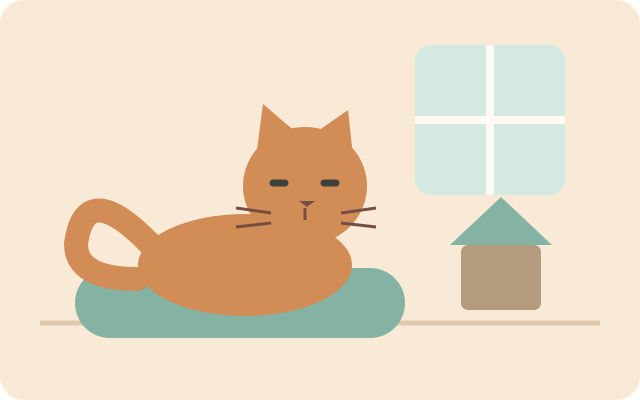
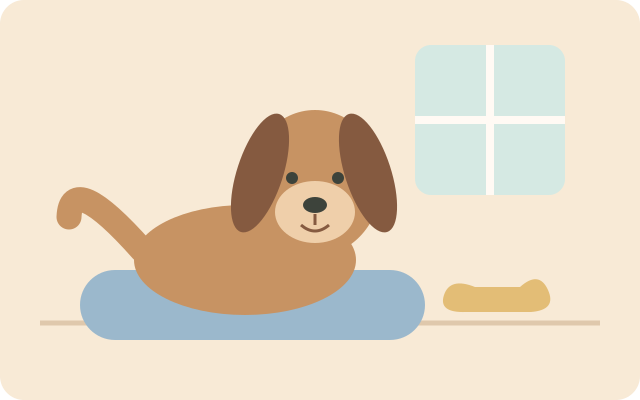
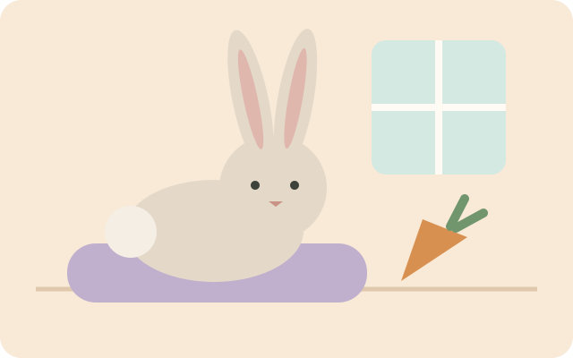

Привычное питание
Корм на весь срок проживания и понятное расписание: порции, время и любимые лакомства.
Сервис поиска передержек
Комфорт складывается из мелочей
Выберите питомца, чтобы посмотреть подходящее предложение. Размещение и уход обеспечивает исполнитель; «Лапки» помогают сравнить варианты.

Предложение передержки «Уют» ориентировано на кошек: личное пространство, место для уединения и полки для отдыха. Конкретные условия и привычный режим питомца стоит обсудить с исполнителем заранее.
800 ₽ / сутки
Посмотреть доступность
Передержка «Простор» предлагает размещение собак с прогулками и местом для отдыха. У исполнителя уточните продолжительность прогулок, условия общения с другими животными и особенности повседневного ухода.
1 200 ₽ / сутки
Посмотреть доступность
Вариант «Мини» предназначен для кроликов и морских свинок. Исполнитель предлагает размещение в привычной клетке или вольере владельца; требования к корму, наполнителю и режиму ухода нужно согласовать с ним.
500 ₽ / сутки
Посмотреть доступностьУ каждого исполнителя свой распорядок. Перед выбором передержки уточните время кормления, прогулок, игр и отдыха.
Ниже — основные моменты, о которых стоит спросить. «Лапки» помогают сравнить информацию; конкретный режим согласуют с выбранным исполнителем.
Уточните время завтрака, смены воды, уборки и первой прогулки для собак.
Обсудите, как чередуются отдых, игры и общение с питомцем.
Спросите о вечернем кормлении, прогулках и условиях спокойного сна.
Корм на весь срок проживания и понятное расписание: порции, время и любимые лакомства.
Плед, лежанку или игрушку с домашним запахом. Для небольшого питомца — привычную клетку или вольер.
Как питомец знакомится с людьми, чего побаивается, какие игры любит и что помогает ему успокоиться.
Расскажите, как питомец осваивается в новой обстановке, чего избегает и что помогает ему успокоиться. Обсудите возможные ограничения и особенности ухода.
Уточните, как исполнитель связывается с владельцем, сообщает об изменениях поведения и действует, если требуется дополнительное внимание. Эти договорённости относятся к выбранной передержке, а не к офису сервиса.